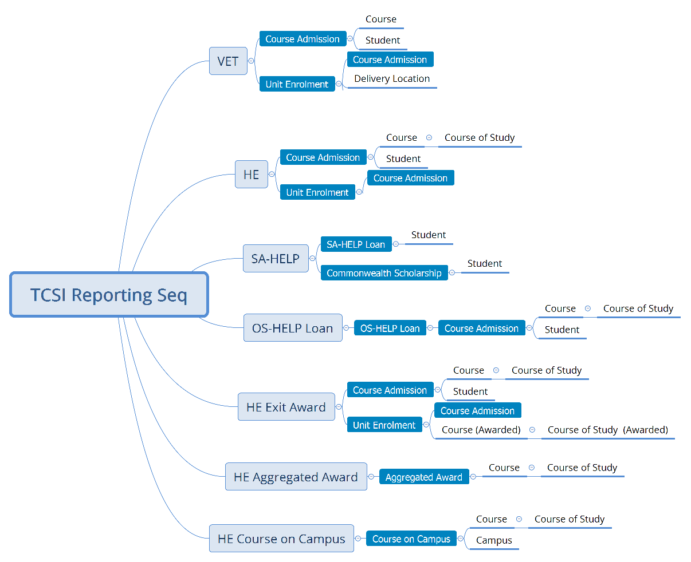
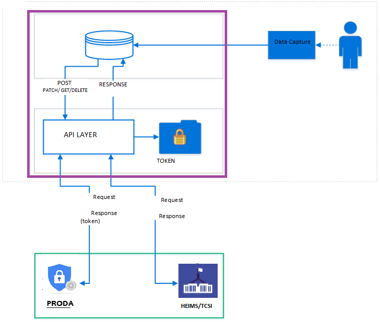
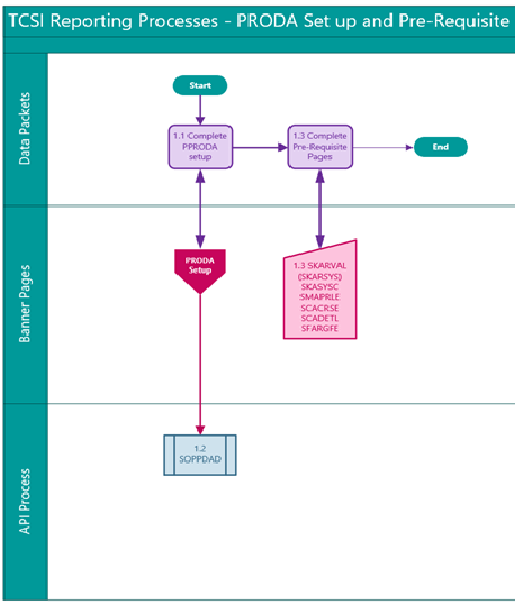

Overview
The Higher Education Information Management System (HEIMS) project is designed to address the needs of the Department of Education (DE) and Department of Human Services project (DHS) on Transforming the Collection of Student Information (TCSI).
The HEIMS/TCSI APIs enable Banner to interact with the DE (Department of Education) and the DHS (Department of Human Services) in near real time and reduce duplication at the education providers' end by allowing to ‘submit one time and inform many' knowing that the data will reach both agencies.
Reporting sequence

The HEIMS/TCSI APIs provide the Banner software access to the data elements (or in API terms, endpoints) in near real time. The education provider gets access to only the information based on their information access rights. The APIs are designed to be easy to consume, with a content structure similar to the data and file elements that the industry has come to know and is familiar with, to enable ease in adoption.
Banner reporting process overview

Banner PRODA Setup and prerequisite pages
